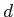

The Gateway Arch is shaped according to the equation:
for x ranging from -330 to 330 and using MATLAB's hyperbolic cosine function (cosh). Create a script arch.m that produces a figure of the arch matching the following style. Note that there is a grid in the background and that the aspect ratio of the graph is square.
Consider the following rendition of the seeds in a sunflower.
We used the following mathematical model to produce this image. We fix a constant and have ``seeds'' numbered from 1 to 1000. Seed is plotted at a location
where and .
Create a script sunflower.m that produces such a figure (note well that displayed axes are intentionally omitted from the figure, and that the image aspect ratio is square).
For your own amusement you might see what kind of patterns you get by slightly modifying the value of , but submit the version with the prescribed value.
Population growth can often be modeled with the following function:
where , , and are well-chosen constants, and
For this problem, we want you to graph the population estimate when compared to the actual data for the U.S. population for the period from 1650 up to 2000. We are providing a text file with the actual raw data (statistics taken from wikipedia). Our file has a simple format, starting as
1650 50400 1670 111900 1690 210400 1700 250900You may download the file population.txt to save in your working directory. It can be loaded from within a MATLAB script with a command such as
pop = load('population.txt');
in which case the variable pop will be set to an array with
n rows and 2 columns.
Write a script population.m that reproduces the following
figure, with the blue dots being the actual data read from the file
and the red line being the estimating function (you can plot the blue
dots in MATLAB by using a line specification of 'b.').
Many financial web sites will display charts similar to the one shown
below showing the price of the Dow Jones Industrial Average as well as
the overall market volume for each day of the most recent year (figure
courtesy of
Yahoo
Finance).
Yahoo also shares its raw data, not
just for the year but for its full history. For this assignment, we
have downloaded the raw data for the Dow Jones going back to 1928.
Our goal is to use MATLAB to reproduce a similar view of the above
timeframe.
We are providing the raw data in a text file (download here), wih one row for each day
of market activity. It is arranged in columns that designate
| Year | Month | Day | Daily Opening Price | Daily High Price | Daily Low Price | Daily Closing Price | Daily Volume |
|---|---|---|---|---|---|---|---|
| 1928 | 10 | 01 | 239.43 | 242.46 | 238.24 | 240.01 | 3500000 |
| 1928 | 10 | 02 | 240.01 | 241.54 | 235.42 | 238.14 | 3850000 |
| ... | |||||||
| 2009 | 01 | 29 | 8373.06 | 8373.06 | 8092.14 | 8149.01 | 5067060000 |
| 2009 | 01 | 30 | 8149.01 | 8243.95 | 7924.88 | 8000.86 | 5350580000 |
Your goal:
You should create a script stocks.m that generates a figure
mimicking the one shown above, as best possible (I do not expect
you to be able to match all of the aestetics for this one). The following
advice will help you.
-
The precise figure above was based on the data from
2008-01-30 through 2009-01-29. The djia.txt file
contains much more historical data than this particular
range. In another week, we will learn to use control
structures to build such figures with more general
techniques.
For this week, feel free to use advanced knowledge about the data set to mimic the figure. In particular, the entry for 2008-01-30 is on row 19919 of that file.
-
There are two subplots. You will need to use the
subplot()function to create one graph with two plots. Although they are drawn with different heights by Yahoo, you may draw them with equal heights in MATLAB (that is the default for subplots).The top portion of the figure is a line graph based upon plotting the daily closing prices.
- Notice that the y-axis is plotted on a logarithmic scale while the x-axis is plotted on a linear scale. This can be accomplished in MATLAB with the semilogy function.
-
By default, the semilogy function draws tick marks for
the y-axis at powers of ten. This can be adjusted to
be at each thousand by using the command
set(gca, 'YTick', 1000 .* [1:20]); set(gca, 'YTickLabel', 1000 .* [1:20]);
-
While we're at it, the tick marks for the y-axis can be
moved to the right-hand side with the command.
set(gca, 'YaxisLocation', 'right');
The bottom figure is a bar graph based upon the daily volume.
- The separation between columns of the bar graph can be achieved in part by sending an extra parameter to the bar function that is the width value (by default, it is 0.8).
- For both portions of the figure, the most difficult aspect to duplicate will be the month labels for the x-axis. Don't worry about this for now, but for those interested we will learn how to do this using control structures.